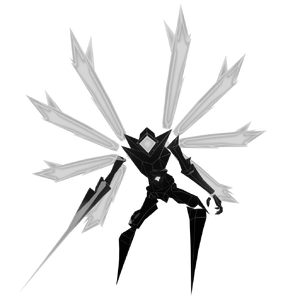

Irides
背景

由锯齿状黑玻璃锻造，头冠闪耀白翼。Crystalline Prototype，一次失败尝试。它的身体不反射任何光，只把光吞入无尽黑暗，而体内的球体则脉动着诡异微光。
它远未成为原本预定的怪物实体，只是在自身诞生遗迹中漂流，如同一个破碎之神，等待杀死或被杀死。
Creator 已死。
Light 即 Strength。
World 是 Bright。
策略
Irides 是快节奏 Boss，由两个阶段组成。第一阶段中，他用一整套攻击斥责对手：斩击、发射投射物，并执行可穿透防御的突刺冲刺。死亡后，Irides 进入第二阶段，获得更高速度和扩展招式组，可以射出大型闪电、光投射物，以及穿透敌人的雷鸣践踏。
第二阶段中，当 HP 低于 50% 时，Irides 可以召唤 3 枚水晶嵌入地面。水晶激活期间，Irides 完全无敌。水晶会以其散发出的闪电指示附近的一名目标玩家。只有被水晶锁定的玩家能对该水晶造成伤害。此外，各个水晶可以蓄力并发动尖刺攻击，迫使战场上的所有人跳过它。整场战斗中水晶最多出现 3 次。
统计
基础 HP：12500
伤害：物理、电击、光耀和暗影
| 属性 | 抗性 |
|---|---|
| 物理 | 弱点 (1.25x) |
| 火焰 | 抗性 (0.7x) |
| 冰霜 | 弱点 (1.15x) |
| 电击 | 中性 (1x) |
| 光耀 | 抗性 (0.5x) |
| 暗影 | 中性 (1x) |
| 毒 | 中性 (1x) |